Remote Sensing Applications: Society and Environment 32 (2023) 101062
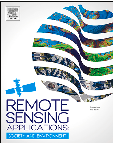
Contents lists available at ScienceDirect
journal homepage: www.elsevier.com/locate/rsase
Siswanto Siswantoa, Danang Eko Nuryantob, Muhammad Rezza Ferdiansyahc, Agita Devi Prastiwid,g, Ova Candra Dewie,f,*, Ahmad Gamale,f, Muhammad Dimyatig
a Center for Applied Climate Information and Services, Agency for Meteorology, Climatology, and Geophysics (BMKG), Jakarta, Indonesia
b Center for Research and Development, Agency for Meteorology, Climatology, and Geophysics (BMKG), Jakarta, Indonesia
c Center for Public Weather Services, Agency for Meteorology, Climatology, and Geophysics (BMKG), Jakarta, Indonesia
d Center for Database, Agency for Meteorology, Climatology, and Geophysics (BMKG), Jakarta, Indonesia
e Department of Architecture, Faculty of Engineering, Universitas Indonesia, Depok, Indonesia
f Urban and Regional Planning Master Program, Faculty of Engineering, Universitas Indonesia, Depok, Indonesia
g Department of Geography, Faculty of Mathematics and Natural Science, Universitas Indonesia, Depok, Indonesia
A B S T R A C T
Around 151 million people (56%) of Indonesia's population currently live in cities. When the in- ner city sees substantially warmer temperatures than neighboring rural areas, a city experiences the urban heat island (UHI) effect. For both day and night time, the inner city within the Jakarta area tends to have a higher land and surface air temperature in comparison to its surroundings. Using available remote sensing satellite data (MODIS and Landsat) and surface meteorological observations, this research detects and defines the spatiotemporal land surface (SUHI) develop- ment in the Jakarta agglomeration region. In this paper, how the intensity of land surface (SUHI) and surface air UHI (AUHI) is measured, the trend assessment of 20 years SUHI area, as well as how land use change contributes to UHI development in the Jakarta Metropolitan area, is dis- cussed. The results show that the SUHI intensity is approximately 3°C–6°C and AUHI is approxi- mately 1°C–2.5 °C. This paper offers a comprehensive feature of UHI in Greater Jakarta as a re- search novelty, which is getting worse in response to global warming.
Keywords: Landsat MODIS Surface air temperature Urban heat Island SUHI AUHI Jabodetabek
In 2045, it is predicted that approximately 220 million people in Indonesia will live in urban areas (World Bank Report, 2019), or about 69% of the total 319 million population (BPS, 2020). Currently, approximately 151 million people (∼56%) of Indonesia's popu- lation live in urban areas. In 1945, only one in eight people lived in cities and towns. Indonesia has experienced rapid urbanization, particularly in most of the largest urban regions, for example, Jakarta, Bandung, Surabaya, and Medan. Urbanization has developed in different characteristics for every region based on the development type and distribution of cities. Unlike in developed countries, megacities in developing countries, such as Jakarta, tend to expand their area instead of shrinking (Rustiadi et al., 2021).
Unplanned urbanization in many cities worldwide may become a compounding factor that worsens the risk of the impact of cli- mate change (Kataoka et al., 2009). A city is experiencing the “urban heat island (UHI)” effect when the inner city experiences much warmer temperatures than nearby rural areas. By its definition, UHI is characterized by “islands’ of warm surface air centered on ur- banized landscapes and surrounded by progressively cooler air over suburban/rural areas (Glossary of Meteorology, 2019; Tzavali et
* Corresponding author. Department of Architecture, Faculty of Engineering, Universitas Indonesia, Depok, Indonesia. E-mail address: ova.candewi@ui.ac.id (O.C. Dewi).
https://doi.org/10.1016/j.rsase.2023.101062 Received 12 February 2023; Received in revised form 11 July 2023; Accepted 16 September 2023
Available online 23 September 2023 2352-9385/© 2023 The Authors. Published by Elsevier B.V. This is an open access article under the CC BY-NC license (http://creativecommons.org/licenses/by-nc/4.0/).
al., 2015). Studies have shown the emergence of the UHI phenomenon in the past decade in many developing economies like Jakarta, Indonesia (Ramakreshnan et al., 2018); Kuala Lumpur, Malaysia (Ramakreshnan et al., 2018); Bangkok, Thailand (Arifwidodo and Tanaka, 2015); Delhi, India (Sharma et al., 2019); Toulouse, France (Pigeon and Masson, 2009); and Turkey, Oman, Chile, Mexico, Argentina, Nigeria, and Ethiopia (Mohan et al., 2012). In Indonesia, several cities are also reported to experience UHI in various de- grees, such as Jakarta, Bandung, Semarang, Surabaya (Muzaky and Jaelani, 2019), and Makassar (Maru et al., 2015).
UHI results from factors that differentiate the urban from the non-urbanized landscape (rural). The urban–rural surface air tem- perature (SAT) contrast is one measure of the UHI effect. The causes of UHI include the release of anthropogenic energy emission from heating–ventilation systems of AC, motor, vehicles, and industrial processes, available surface moisture amount, and the differ- ence in heat capacity of urban building materials with natural structures (Miles and Esau, 2017; Mohajerani et al., 2017). Land use and land cover change, especially in the urban area, will affect climate and environmental conditions. It will not be affecting only the temperature but cloudiness, precipitation, water and air quality as well. Vegetation areas decrease, and change to concrete, asphalt and open land will increase temperature (Arnfield, 2003; Wickham et al., 2013). Build-up land surfaces reach higher temperatures than surrounding areas, and city activities increase the air temperature. The spreading of UHI in urban areas will have implications for long-term temperature increases, air pollutant circulation, bioclimatic conditions, and heating and cooling costs (Lemonsu et al., 2015).
Greater Jakarta (Jabodetabek) has emerged as the world's second-largest urban area, with a population of 28 million in 2010. Fig.
1 shows that the Jakarta metropolitan area as part of the north coast of Java has the highest population growth among other metro- politan cities. Metropolitan cities in this region were rapidly developed due to capital intensive, high-performance economic concen-
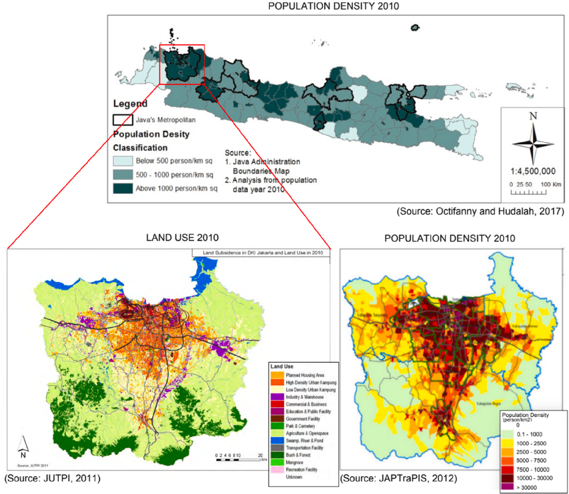
Fig. 1. (Top) Population density in Java Island (Source: Octifanny and Hudalah, 2017) as the most populated island in Indonesia with insets: (Left) The land use and land cover type for the Jabodetabek area in 2010 (adopted from JUTPI, 2011) and (Right) The Jakarta's population density in 2010 (adopted from JAPTraPIS, 2012).
tration, socio-political importance, global role importance, and most infrastructure importance settlement area in Indonesia (Octifanny and Hudalah, 2017). Looking at Jakarta metropolitan (Fig. 1 left), build-up areas were expanded increasingly in Bogor, Karawang, Bekasi, and Tangerang regencies. In 2010, the population densities of those areas were recorded as up to 30,000 people/km2, whereas some locations in Jakarta exhibit a density of more than that number (Fig. 1, right). The pattern of population density indicates an expansion along the toll road in the north and the nontoll road in the south (Rustiadi et al., 2021). This urban ex- pansion has a significant impact on the local environment (Pravitasari et al., 2015). A recent analysis of a century-long annual daily mean SAT by Siswanto et al. (2016) found an increase of approximately 1.6 °C (1866–2012), higher than the observed global average temperature increase of 0.85 °C during the period 1880–2012 (IPCC, 2021). The annual maximum temperature increases stronger than the annual daily minimum temperature with a rate of 2.12 °C per century, but the minimum temperature increased sharply in the last 50 years at a rate of 0.42 °C per decade (Fig. 2, left). Nowadays, the average daily mean temperature in Jakarta is approxi- mately 28.2 °C, with daily maximum and minimum temperatures being approximately 32 °C and 24.8 °C, respectively.
A series of climatological trend analyses of surface temperatures in several locations in Jakarta and its surroundings have been conducted for the period 1980–2012 (Siswanto et al., 2016). The analysis indicates the signal of the UHI phenomenon that continues to strengthen (Fig. 2, left). Over the past 30 years, the most striking change has been the increase in the minimum temperature at four meteorological stations in Greater Jakarta, namely, Jakarta Obs. Kemayoran, Tanjung Priok, Halim PK Airport, and Soekarno–Hatta Airport with a trend of 0.3°C–0.75 °C per decade (Fig. 2, right). This is stronger than the global warming signal and much faster than the daily maximum temperature rise, which has even decreased the trend since around 2000 in Tanjung Priok, especially during the transitional and dry seasons. In rural areas (rural), the minimum temperature did not increase sharply as evidenced in Bogor and other stations located in areas with lower population density and development (Curug, Tangerang, and Citeko, Bogor) (Fig. 2, right). The analysis of the observation data is in accordance with the urban canyon effects (Camiloni and Barros, 1997; Hughes, 2006) in the UHI mechanism. It is suspected that Jakarta's higher temperature increase is a local response to global warming and the effect of the intensification of urban heat islands (UHI).
UHI in Jakarta has been paid attention to broadly by several studies, as summarized in Table 1. Most of them focused on the UHI identification either from the remotely sensed surface or in situ SAT. Nevertheless, UHI research specifically addressing the tropical regions is still <20% of the global scope.
This paper identifies and characterizes the spatiotemporal UHI development based on available remote sensing satellite data as well as surface meteorological observations. Satellites measure the heat of land surface temperatures (LSTs) (including the uppermost parts of, e.g., trees and buildings), whereas meteorological stations measure the air temperature just above the surface. We will also investigate how land use change contributes to UHI development in the Jakarta Metropolitan area. This paper offers a comprehensive view of UHI in Greater Jakarta, both from the land surface and near-surface air temperature, in which both are matters for human thermal comfort that are supposed to be getting worse in response to global warming.
2.1. Study area
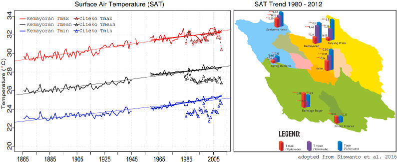
Fig. 2. (Left) The annual mean of daily maximum (red), mean (black), and minimum (blue) temperature during the period 1866–2012 for Jakarta Observatory/Ke- mayoran station (solid line) and Citeko (dashed line). (Right) The linear trend coefficient (unit: °C/decade) of the annual mean of daily maximum (red), mean (green), and minimum (light blue) temperature for seven meteorological stations in Jakarta and surrounding areas during the period 1980–2012. Figures are adopted and modified from Siswanto et al. (2016).
Table 1 Summary of UHI-related studies in Jakarta.
Study Title Findings (Rushayati et al., 2016)
Adaptation Strategy Toward Urban Heat Island at Tropical Urban Area
During 12 years, 49.7% of green open space was converted into other land uses, especially build-up areas. Almost all of the Jakarta area has high surface temperatures caused by the Urban Heat Island (UHI) phenomenon in Jakarta.
Estoque et al.
Effects of Landscape Composition and Pattern on Land Surface Temperature an Urban Heat Island Study in the Megacities of Southeast Asia
It found a significantly strong correlation between mean land surface temperature (LST) and the density of impervious surface (positive) and green space (negative) along the urban–rural gradients of the three cities (Bangkok, Jakarta, and Manila) depicting a typical UHI profile.
(2017)
(Kataoka et al., 2009)
Urban Warming Trend in Several Large Asian Cities Over the Last 100 years
The long-term trends in surface temperature in several large Asian cities (Seoul, Tokyo, Osaka, Taipei, Manila, Bangkok, and Jakarta) have been analyzed for estimating the effects of urban warming. Jakarta and Bangkok exhibited a lower E-HII. The E-HIIs of Manila and Bangkok have been increasing rapidly since 1961.
Prasasti et al.
The Effect of Environmental Condition Changes on Distribution of Urban Heat Islands in Jakarta Based on Remote Sensing Data
There has been a change in the condition of the land use/cover, impairment Normalized Difference Vegetation Index (NDVI), and expansion Normalized Difference Built-up Index (NDBI) during the period 2007–2013 that trigger an increase in LST and the formation of heat islands in Jakarta, especially in the area of business centers, main street, and surrounding area, as well as in residential areas.
(2017)
(Lestari et al.,
Study on Heat Island Effect Induced by Land Use Change Increase Temperature in Metropolitan Jakarta
The Heat Island increased temperature trend rate/year in Jakarta, Tanjung Priok, Serang, Halim, Pondok Betung, Cengkareng, Curug, and Bogor by approximately 0.051 °C, 0.021 °C, 0.018 °C, 0.012 °C, 0.006 °C, 0.006 °C, 0.005 °C, and 0.004 °C from 1986 to 2008, respectively, equivalent to average warming in the city, suburban, and mountainous areas of approximately 2.5 °C, 0.6 °C, and 0.4 °C.
2015)
(Tursilowati et al., 2015)
Relationship between Urban Heat Island Phenomenon and Land Use/Land Cover Changes (LULCC) in Jakarta Area
LULC was dominated by vegetation in 1989 but dominated by residence in 2002. In both 1989 and 2002, the distribution of UHI with high Ts (>30 °C) is seen in the central area of the city where buildings, roads, and other non- vegetation surface types are dominant. The lower surface temperature is found in vegetation and water body areas.
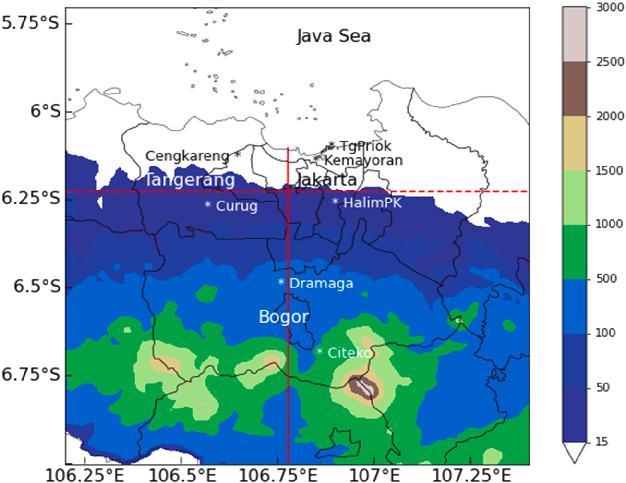
Fig. 3. Map of the Jakarta Metropolitan (study area). Shaded color scales indicate the altitude in meters. Stars indicate the location of seven meteorological stations used in this study. Red solid (dashed) lines represent the north–south (east–west) cross-section to delineate the UHI boundary. The areas with no color on the map are low-land with an altitude of fewer than 15 m.
2.2. Meteorological station data
This paper utilizes daily SAT data from seven meteorological stations located in the urban and nonurban areas within Jakarta Met- ropolitan as depicted in Fig. 3, particularly, to assess the intensity of the AUHI. Urban data represent the measurements taken at BMKG's meteorological stations within Jakarta, namely, Kemayoran/BMKG headquarters (6.15°S, 106.84°E, WMO ID: 96,745), Tan- jung Priok harbor (6.11°S, 106.88°E, WMO ID: 96,741), and Halim PK Airport (6.27°S, 100.89°E, WMO ID: 96,747, ICAO ID: WIHH). Suburban is represented by Curug, Budiarto Airport (6.50°S, 106.75, ICAO ID: WIRR), and rural data are represented by BMKG's me- teorological stations at Darmaga Bogor (6.23°S, 106.75°E, WMO ID: 96,753) and Citeko (6.70°S, 106.85°E, WMO ID: 96,751). The
classification defines areas as urban if they fall under settlements with more than 10.000 residents, less than 2.500 residents define as rural, above 2.500 and less than 10.000 residents define as suburban. Based on the 2021 Census of Population and Housing, Bogor Re- gency (Citeko) has a population of 2.244 residents, Tangerang Regency (Curug) and Bogor City (Dramaga) have a population of 3.432 residents and 8.851 residents. Table 2 displays the information and temporal coverage of collected data. All stations are operated by the Agency of Meteorology, Climatology, and Geophysics (BMKG), and data were obtained from their Center for Database of BMKG.
2.3. Satellite data
Besides in situ air temperature data, we also use LST to analyze surface UHI (SUHI) evolution in space and time. LST is an impor- tant measurement depicting land-atmosphere interaction and has excited scientists' interest. However, determining LST from space radiometric radiances is a difficult task with an ill-posed problem (LST retrieval is undetermined and unstable). According to the 2016 Global Climate Observing System Implementation Plan, the temperature of the land surface (LST) rather than that of the near-surface air (SAT) is a key surface parameter in driving boundary layer processes. It has recently been proposed as a new essential climate vari- able [GCOS, 2016]. In this study, we utilize monthly land surface temperature and emissivity (LST&E) collected from the MODIS/ Terra satellite product: the MOD11C3 Version 6 with 0.05° latitude/longitude (∼5.6 km) spatial resolution. Terra is orbiting at 705 km altitude and crossing the equator at 10:30 a.m. as a descending node. The data were assessed from Giovanni (https:// giovanni.gsfc.nasa.gov/) for a time spanning from 2001 to 2020. The LST&E values are derived by compositing and averaging the val- ues from the corresponding month of MOD11C1 monthly files. Each MOD11C3 product comprises the following layers for daytime and nighttime observations: LSTs, quality control assessments, observation times, view zenith angles, and the number of clear-sky ob- servations along with a percentage of land in the grid and emissivities from bands 20, 22, 23, 29, 31, and 32.1
It is notable that remote sensing has limitations. Satellites revolve around earth, spend a limited time over one specific region, there is always a probability of cloudy sky covering when the satellite images capture the UHI over a land.
2.4. Methods
2.4.1. Spatio-temporal SUHI measurement The UHI profile usually features an elevated temperature in an urban area different from the non urban area. To reflect this spa-
tially, we measure the Jakarta Metropolitan SUHI profile based on the normalized MODIS LST data similar to as given by Zhang
(2006):
SUHI =
LST − LSTarea STD
where LST is the value of LST in the respective month, LST area is the mean LST value in the Jakarta Metropolitan area, and STD de- notes the standard deviation.
In addition to SUHI, here we calculated also the Urban Thermal Field Variance Index (UTFVI), following Zhang (2006) and Vergara et al. (2023):
UTFVI =
LST − LSTarea LSTarea
UTFVI explains the UHI effect to the environment well-being with respect to ecological thermal comfort in the study area quantita- tively.
2.4.2. UHI intensity To measure the intensity of the UHI, it is common to use the temperature difference between urban and nonurban areas as a proxy
(ΔTurban-rural). Here we take two definitions of UHI intensity that is from land SUHI and surface air UHI (AUHI) intensity. SUHI and AUHI intensity based on monthly data aggregated from the daily maximum temperature (Tmax) and minimum temperature (Tmin) of the observed meteorological station's SAT, and based on monthly LSTday and LSTnight. We calculated as follows:
SUHIintensity = LSTurban − LSTrural and AUHIintensity = Turban − Trural
These UHI intensity measures are analyzed as a time series and annual cycle. AUHI, SUHI and UTFVI is then analyzed in the seasonal- based composite, e.g., the period of December–January–February (DJF) as the peak of the rainy season in Jabodetabek, March–April–May (MAM), June–July–August (JJA) as the peak of the dry season, and September–October–November (SON). This is important to investigate the role of monsoon (season) in the SUHI or AUHI variation. The comparison of LST and SAT is also per- formed to link surface temperature and air temperature.
2.4.3. Land use land cover changes impact LSTs The expansion of urban settlement patterns as the city developed will influence LST in comparison to other surface landscapes. We
analyze land cover changes of three different land use land cover conditions in 2004, 2014, and 2020. LULCC estimations were de-
1 MOD11C3 - MODIS/Terra Land-Surface Temperature/Emissivity Monthly Global 0.05Deg CMG. https://ladsweb.modaps.eosdis.nasa.gov/missions-and- measurements/products/MOD11C3/#overview.
Table 2 Meteorological stations data used in this study covering the urban, suburban, and rural areas. Temperature data within the period 1985–2020 are used for analysis.
Station name Lat (S) Lon (E) Altitude (m) Classification
Jakarta Obs./Kemayoran 6.15 106.84 8 urban Tanjung Priok harbor 6.11 106.88 2 urban Halim PK Airport 6.27 100.89 25 urban Cengkareng, Soekarno–Hatta Airport 6.12 106.65 8 urban Curug, Budiarto Airport 6.23 106.65 46 suburban Dramaga 6.55 106.74 190 suburban Citeko 6.70 106.65 920 rural
Note: Urban stations are placed in the city, densely populated areas with multi-storey houses and tall buildings. Suburban stations are outside the city with quite dense houses but less tall buildings. Rural stations are placed far outside the city with lots of nature and open spaces, more single landed houses with fewer people and build- ings than urban or suburban areas.
rived from cloud-free Landsat surface reflectance imagery from the USGS earth explorer website (https://earthexplorer.usgs.gov/) and processed using Google Earth Engine (GEE) JavaScript syntax.
GEE consists of analyzing a multi petabyte data catalog that is placed on a high-performance computing engine and can be ac- cessed via a web-based application programming interface Landsat 5 TM and Landsat 8 OLI/TIRS data were used to identify the land use and land cover of the study area. A sampling data represents the study area followed by training data according to the classifica- tion reference that was performed at first. We defined four land use classifications used in the analyses (Table 3). From the same satel- lite, using the thermal bands 6 and 10 of Landsat 8, we can also obtain the LST in the study area. The obtained LST is then used to measure the impact of the respected land cover changes. The Landsat thermal band 10 has higher accuracy than band 11 with RMSE ≤ 1 K (Yu et al., 2014).
3. Results
3.1. Spatio-temporal SUHI profile: identification and seasonal characteristics
To describe the SUHI profile, we take a slice cross-section of continuous surface temperature distribution covering urban and rural space. Fig. 4 depicts a north–south cross-section at 106.78°E (left panel) and a west–east cross-section at 6.23°S (right panel) transect of annual daytime (Tday) and nighttime (Tnight) MODIS LST, averaged for the 20 years. In general, the meridional (north–south) and zonal march LST along the transect show an asymmetrical shape. For the north–south section from Sukabumi to the Java Sea, an asymmetry south-to-north or “seesaw-like” profile with a maximum LST close to Jakarta Bay. An average peak daytime LST is higher (33 °C/306K–39 °C/312 K) over central urban regions from Depok to Jakarta Bay (∼6.1°S to ∼6.5°S) and approximately 30 °C/303 K over suburban to rural/mountainous regions (∼6.6°S to ∼6.9°S) in Bogor and Sukabumi (Fig. 4A). A sharp rise of roughly 3 °C is found around latitude 6.5°S between Bogor and Depok. It might be indicated as a SUHI boundary that is reflected by the temperature differ- ence between urban and rural regions.
For the nighttime LST, urban temperatures have a similar “seesaw-like” pattern to the daytime but with lower temperatures. The surface temperatures in rural and mountainous regions of Bogor and Sukabumi are approximately 20 °C/293 K, whereas tempera- tures gradually increase from 22 °C in the Depok region to the north, peaking at Jakarta Bay at approximately 25 °C. A sharp rise of roughly 1.5 °C around latitude 6.5°S between Bogor and Depok is consistent with the daytime SUHI boundary. The difference be- tween day and night is approximately 10 °C in the urban Jakarta area.
A similar pattern is shown for the west–east cross-section at 6.225°S (Fig. 4C). The elevated daytime LST (dome profile) is more pronounced within urban Jakarta regions with a temperature range of 33 °C/306K–39 °C/312 K. A sharp temperature increase of more than 3 °C (SUHI boundary) is found around Tangerang and Bekasi regions. A similar profile is indicated by the nighttime tem- perature distribution from Serang to Karawang with a more flattened profile.
Analysis of seasonal variation does not deviate much from the annual variation. The north–south urban daytime LST during SON is higher than in other periods. In contrast with the nighttime LST pattern, the urban temperature is higher during SON, whereas during MAM LST is higher in rural areas (Fig. 4C). Urban–rural LST is shown to be lowest during JJA in the daytime and during DJF at night-
Table 3 The definition of Landsat's land use classifications used in this study.
Classified Description Build-up areas
Urban or build-up land is defined as an area characterized by buildings, asphalt, concrete, suburban gardens, and a systematic street pattern. The classification of urban development includes as follows: (i) residential areas, (ii) commercial areas, (iii) industrial areas, (iv) transportation or communications areas, and (v) utilities.
Vegetated area
Vegetated areas are areas that are covered with plants and trees, which include as follows: (i) agricultural areas, (ii) forest land, (iii) shrub and brush, and (iv) green areas in cities such as parks.
Water bodies
Water bodies are the water collection of flows beneath the Earth's surface, which include the following: (i) streams and canals, (ii) rivers, (iii) lakes, and (iv) reservoirs.
Barren land
In general, it is an area of thin soil, sand, or rocks that includes transitional areas. The transitional area is the area that changes from one land use activity to another; for example, forest lands are cleared for agriculture, wetlands are drained for development, or when any type of land use ceases as areas become temporarily bare as construction is planned for such future uses as residences, road, and industrial sites.
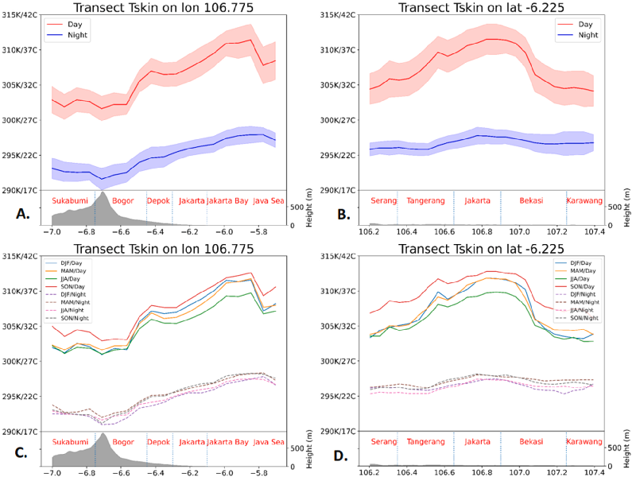
Fig. 4. General LST profiles of (A) south–north cross-section at 106.775 E and (B) west–east cross-section at 6.225 S, averaged annually. (C) A seasonal composite pat- tern LST profiles as in (A) and (D) as in (B). Monthly LST during 2001–2020 was separated into December–January–February (DJF), March–April–May (MAM), June–July–August (JJA), and September–October–November (SON). The height of altitude along the transect, as well as the approximated locations, was described in the bottom panels.
time. In other words, the JJA LST is cooler during the day and the DJF LST is cooler during the night. Fig. 4D indicates the highest SON LST and lowest JJA LST profile of the west–east cross-section that has an agreement for the daytime LST seasonal pattern. Al- though at nighttime, a different seasonal pattern with a north–south cross-section is found where the urban area is highest at SON and lowest at DJF/JJA.
3.2. Spatial extent, seasonal dependence, and trend of SUHI
We further investigate the Jabodetabek SUHI by looking at the variation of the spatial area at different seasons. Fig. 5 shows the spatial variation of SON, DJF, MAM, and JJA spatial SUHI over the Jabodetabek region. The SUHI area is defined by a polygon repre- senting a buffer zone border with a fixed SUHI threshold of ≥1 °C for daytime and nighttime LST, respectively. The daytime SUHI has a larger and wider area during SON, followed by DJF and MAM, and smaller in the JJA. During the SON period, the SUHI area ex- tended more in west and east directions outside the Jabodetabek area with SUHI >1.5 °C (Fig. 5A) and the hottest spot of >37.5 °C (310.5 K) in the center of Jakarta downtown (not shown). DJF and MAM share a relatively similar pattern of SUHI boundary. The nighttime SUHI is concentrated more to the north coast for all seasons, larger in SON and JJA, followed by MAM and smaller in DJF (Fig. 5B). This nighttime SUHI is more obvious in the LST of >24 °C/297 K (not shown).
We then further check the spatial extents of SUHI gradient by looking at the UTFVI. We assume that this UTFVI gradient might be more objective respect to LST variances between urban and peripheral areas. Fig. 6 shows spatial variation of SON, DJF, MAM, and JJA UTFVI gradient, for daytime (A) and nighttime (B), respectively. The blue-to-red-shaded color indicated a lower to a higher UT- FVI gradient, indicating the magnitude of the temperature difference with neighboring areas. We overlaid the polygon with threshold 0.1 indicating the UHI border. Fig. 6 indicates that this boundary measure results in a quite similar with pattern in Fig. 5, in particular to DJF and JJA but rather different in SON for daytime, and in SON and MAM for the night time UTFVI. During the daytime, the SUHI and UTFVI are generally centered in the urbanized city, while during nighttime both are rather spreaded zonally. We suggest, from these reasonably similar results, that both threshold-based temperature gradients are valid to be used to measure SUHI extension, which will be explored in the next steps.
Apart from being seasonally dependent on SUHI, we are also interested in whether the SUHI phenomenon tends to increase due to urban temperature increase affected by sustained urban expansion. Fig. 7 displays the year-by-year seasonal variation of SUHI exten- sion defined as area coverage within the SUHI polygon for threshold-based. For daytime SUHI, Fig. 7A indicates a slight increase of SUHI extension during MAM and JJA is observed, whereas no trend is found for DJF and SON. A steep rise of SUHI extension for all
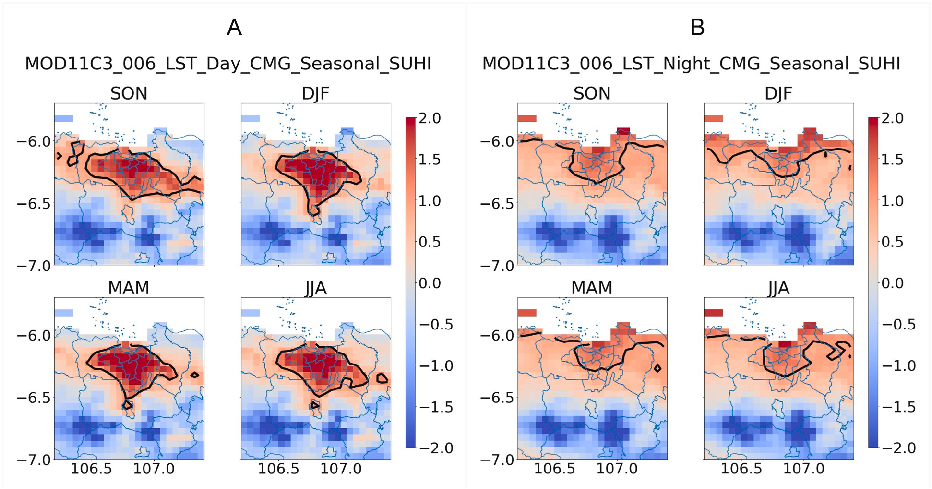
Fig. 5. Seasonal variation of SUHI for (A) daytime and (B) nighttime. The blue-to-red shaded color indicated the lower to a higher SUHI gradient. The overlaid polygon thick line depicts SUHI threshold 1.0, respectively.
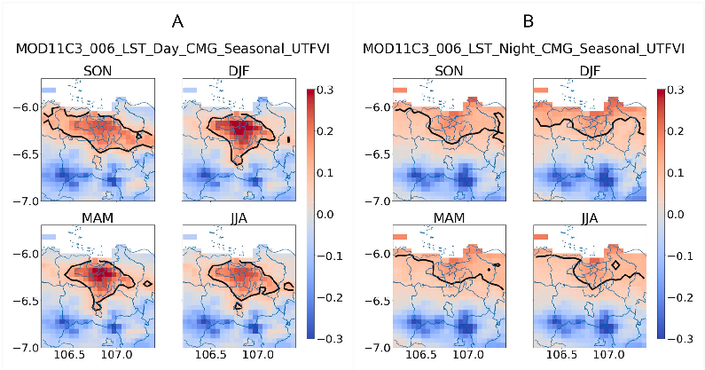
Fig. 6. Seasonal variation of UTFVI for (A) daytime and (B) nighttime. The blue-to-red shaded color indicated a lower to a higher UTFVI gradient. The overlaid polygon thick line depicts UTFVI threshold 0.1, respectively.
seasons is observed for the nighttime SUHI (Fig. 7B). The trend of nighttime SUHI varies from 1 to 4 m2/year, stronger during MAM and JJA periods. The nighttime increase in SUHI indicated a clear signal of the contribution of UHI effects. The stronger positive trend in SUHI coverage areas during transitional and dry seasons (MAM and JJA) indicates that during these months, the difference in day- time LST is relatively smaller, implying a lower impact of urban heating, which reaches a maximum during the nighttime.
3.3. SUHI and AUHI relation
After we measure SUHI extension and seasonal dependence, we would like to see the characteristics of surface AUHI and its inten- sity. This is of importance since LST-based UHI measure has limitations for UHI studies in the context of varying meteorological con- ditions. The limitations include the fact that LST is not a direct measure of air temperature and that it is influenced by many factors such as vegetation cover, soil moisture, and atmospheric conditions. The surface UHI is different from the atmospheric UHI in which
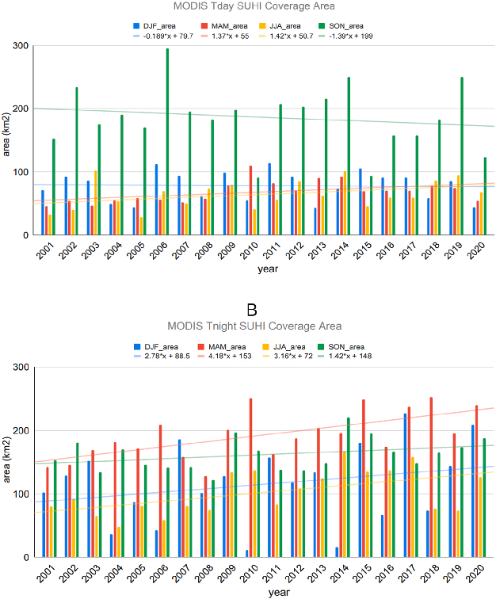
turbulence and velocity activities have an impact on the ambient air temperature, thus observed surface temperature can be signifi- cantly different from the ambient air temperature. Therefore, in order to fully use the measured data, it is necessary to first predict the actual UHI (atmospheric UHI) from the surface. Here we explored the relationship between monthly average LST (day and nighttime) and ground-based observations of 2 m SAT (Tmin and Tmax) data acquired at seven meteorological stations for the period 2001–2020 as presented in Fig. 8. Although the two parameters are not compatible for direct comparative or validation purposes, the information on their annual variations is still valuable for a biased study.
Generally, a larger difference between LST and SAT is observed during the daytime. It is presumably due to the larger LST varia- tion in the daytime than in the nighttime. Larger daytime LST variation is pronounced at most stations except for Dramaga, and Citeko (Fig. 8, top). The daytime LST and SAT-Tmax show a similar semiannual pattern with two peaks in April and October, with higher daytime LST variations generally occurring from September to April. By contrast, LST has a slightly lower pattern than SAT- Tmax in April–August at Dramaga, and most of the time at Citeko. For the nighttime (Fig. 8, bottom), nighttime LST and SAT-Tmin also show semiannual pattern peaks in April and November, with relatively small differences except for Tanjung Priok, Kemayoran, and Citeko. Most of the time, the SAT-Tmin is higher than the nighttime LST at Tanjung Priok and Kemayoran, almost similar at Dar- maga, while exhibiting higher for the rest of the stations. This indicates that the city center (Tanjung Priok and Kemayoran) will have stronger AUHI intensity.
Fig. 9 represents the assessment of the monthly evolution of UHI intensity for AUHI and SUHI. AUHI intensity is derived from maximum air temperature (SATmax) (top left) and minimum temperature (SATmin) (bottom left), whereas SUHI intensity is de- rived from daytime land temperature (LSTday) (top right) and nighttime land temperature (LSTnight) (bottom right). AUHI and SUHI intensity is measured by the magnitude of the respected temperature difference (ΔT) between Kemayoran, representing the inner city area, and Citeko (rural area) for each month. Generally, the SUHI magnitude is higher than AUHI. The AUHI magnitude for SAT minimum (nighttime) is larger than SAT maximum (daytime), whereas daytime LST has a larger magnitude than nighttime LST. The characteristics of AUHI and SUHI are evolving differently according to season. For instance, the daytime AUHI reaches a
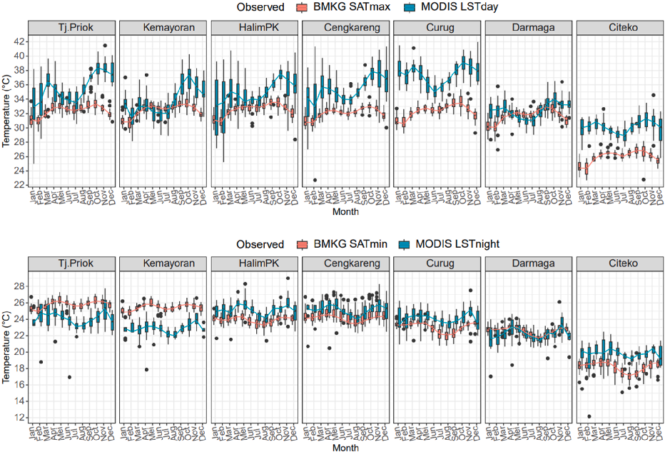
higher intensity of >1.5 °C in October and November when the city air maximum temperatures reach higher values (>33 °C). The nighttime AUHI reaches a higher intensity of >2.0 °C in the period July to October when minimum temperatures in the city are in the range of 25.3°C–25.8 °C, although the warmer minimum temperature is pronounced in May (26 °C). The daytime SUHI inten- sity was apparently very strong up to >6 °C in October–December when the daytime LST also reached a maximum of >308 K, similar to daytime AUHI. The nighttime SUHI shows a different characteristic where it reached a higher intensity in the period of September to December (>5.0 °C), whereas warmer nighttime LST is observed in November, April, and May (>299 K). This be- havior is not only determined by the temperature variability in the city but also in the rural area as indicated by Fig. 8.
3.4. Land use land cover changes impact on surface temperatures
Over 16 years urban expansion was significantly expanding from the city center in the north area to the surrounding area in the south area. Fig. 10 (top) shows four maps of land use land cover in the Jabodetabek area. The classification was divided into four classes, namely, water body's area, vegetated area, build-up area, and barren land area. Classification accuracy of land use land cover classification in 2000, 2004, and 2020 are 100%, 77%, and 76%, respectively, with kappa coefficients for all periods being 1.0. Gener- ally, from 2004 to 2020 a vegetated area was converted into a built area and barren land. In 2020, the build-up area expanded from 1066 to 1682.2 ha, increasing up to 25% (616.2 ha) of the total area. The dominant urban growth was the expansion of settlement ar- eas in suburban areas on the edge of Jakarta Metropolitan, such as Depok City, Bogor City, South Tangerang City, and Bekasi City.
Barren land expanded from 848.5 to 1681.3 ha, increasing 25% (832.8 ha) of the total area. In 2020, vegetation decreased from 4202 to 2866.4 ha, nearly decreasing 20% (1335.8 ha) of the total area. Water bodies decreased from 654.3 to 541.1 ha, approxi- mately 2% (113.2 ha) of the total area.
Thermal variation was different for each land use and land cover type. Fig. 10 (below) presents the LST variation in the years 2004, 2014, and 2020. The line chart in Fig. 11 clearly shows that build-up area increases every year with the temperature given in barchart tends to have higher temperatures than the surrounding environments. Due to the urban expansion, the central areas like Jakarta City, Tangerang City, South Tangerang City, and Bekasi City reached the highest temperatures. The mean temperature of the surface build-up areas is 27.97 °C in 2004, 30.82 °C in 2014, and 28.7 °C in 2020.
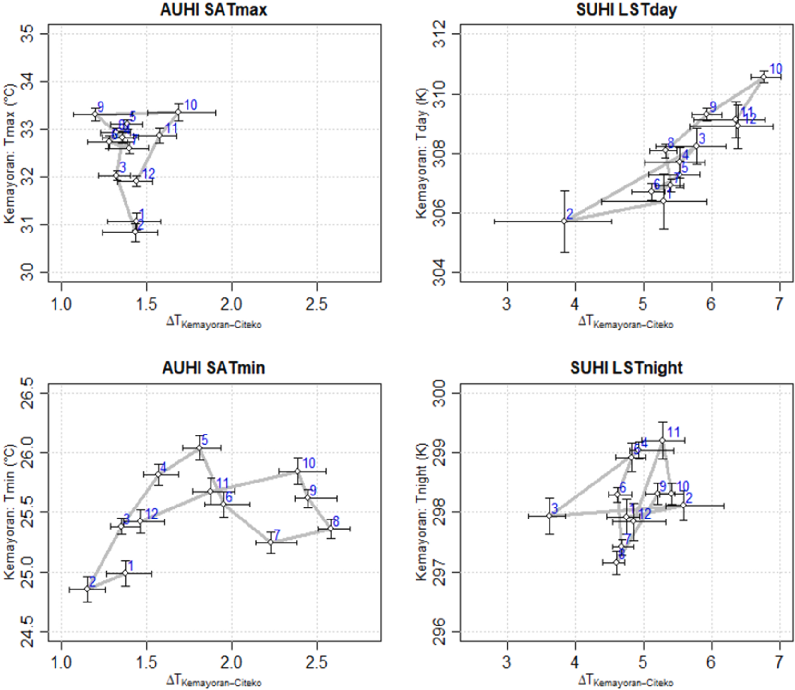
The UHI signal can be seen clearly in the Jakarta area, over the surface (SUHI) as well as in the air (AUHI). UHI may become a common feature of major cities in the world related to the urban warming trends, particularly in Asian cities (Kataoka et al., 2009). Although in Kataoka et al., 2009) Jakarta and Bangkok were found to have lower UHI intensity based on their UHI index compared to Osaka, Seoul, Tokyo, and Taipei, the rise in daily mean temperature of Jakarta has competed with the global temperature trend since 1965 as presented in Siswanto et al. (2016). There, a higher trend of nighttime temperature over the last 50 years indicated a strong UHI. This paper reveals that the inner city within the Jakarta area tends to have a higher temperature than its surroundings, for both day and night time (Figs. 4–6 and 8). In large urban settlements, human activities greatly modify the environment, creating unique meteorological and climatological characteristics over the city different from surrounding areas. In Jakarta, it results in a typical sev- eral-degree of land (approximately 3°C–6°C) and air (approximately 1°C–2.5 °C) temperature difference between the center of the city and the surrounding areas (Fig. 9). From the perspective of space for time, all phases of urbanization, economic activity, population increase, and build-up area development will have substantial impacts on the magnitude of SUHI intensity all the time (Cui et al.,
2016). The profile of Jakarta's SUHI developed markedly in the north–south and east–west directions as depicted in Figs. 4–6. This profile
mimics a common figure of the well-known “dome heat islands” over the city that many scholars have described (e.g., Oke, 1982; 2017; Katzschner, 2009; Masson et al., 2020), in particular for the west–east profile, where the urban expansion is in symmetrical de- velopment. The asymmetrical south–north profile, where the temperature increases sharper in the northern part of Jakarta might be due to the more densely populated and earlier developed area. Thus, we suggest that the urban density and historical extension of city development play a role in shaping the dome heat island profile. Jakarta's historical urban extension (see, e.g., Siswanto et al., 2016) will then be related to building shapes, demographic, and residential energy use that has an impact on increasing ambient tempera- tures in the city (Antonopoulos et al., 2020). Observed AUHI higher than SUHI in Kemayoran and Tanjung Priok support this argu- ment.
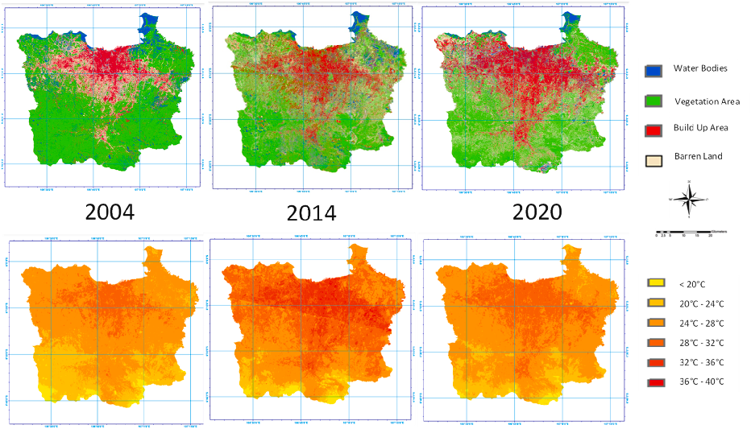
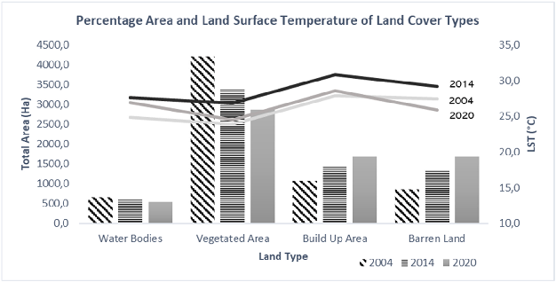
Fig. 11. Total area and land surface temperature of land cover types in Jabodetabek in 2004, 2014, and 2020. The total area is shown by bar charts and land surface temperature in the line chart.
The temporal variation of seasonal SUHI has a similar pattern to the annual mean (Fig. 4). For both daytime and nighttime, the SUHI is higher over central urban regions from Depok to Jakarta Bay than over suburban to rural/mountainous regions in Bogor and Sukabumi. Moreover, higher SUHI in the boreal spring and autumn or monsoonal transition period in MAM dan SON. The daytime SUHI is cooler in the peak of the dry season (JJA) and the nighttime SUHI is cooler during the peak of the rainy season (DJF). This fea- ture is rather similar to the seasonality of SUHI in some megacities in eastern China where a higher SUHI is found in spring and sum- mer and a lower one occurs in winter (Hu et al., 2019), which they suggested is being altered by warm and wet conditions. In the coastal city of Dalian in China, the UHI effect only exists in spring and summer, and no obvious UHIs were found in autumn and win- ter (Wu et al., 2019).
The spatial SUHI coverage area defined by a specific threshold or temperature gradient boundary is also observed to be seasonally dependent. The day and nighttime SUHI areas have a larger and wider area during SON, followed by DJF and MAM, and smaller in the JJA (Figs. 5 and 6). The daytime SUHI area is extended more in west and east directions outside the Jabodetabek area during the SON period with stronger LST in the city center. The nighttime SUHI is concentrated more on the north coast for all seasons, larger in SON and JJA. This suggests that in the city center and on the north coast, where the population density was heavier and first urban- ized (Fig. 1), build-up area development and economic activity might be creating higher SUHI intensity. SUHI intensity reaches
higher intensity in the period September–December, whereas AUHI intensity is in the period July–November (Fig. 9). Stronger day- time and nighttime SUHI during September to November and lower in July to August were presumably related to the period of maxi- mum solar irradiance due to solar solstice, with an additional sea-breeze role that being stronger in July to October (Hadi et al., 2002). Additional heat from domestic uses, then impacting increases AUHI at night. The 10 years assessment of the SUHI area trend from 2001 to 2020 exhibited an upward trend of the daytime SUHI coverage area evolution in the MAM and JJA periods (no trend is found for DJF and SON). Conversely, for the nighttime SUHI, upward trends in the SUHI area are observed in all seasons (stronger during MAM) (Fig. 7A and B).
Our analysis of the land use land cover changes and its impact on surface thermal variation from 2004 to 2020 shows an increase of up to 25% (616.2 ha) of the settlement area with the expansion of settlement areas in suburban areas. The barren land expansion increased by approximately 25% (832.8 ha). Conversely, in 2020, vegetation decreased from nearly 20% (1335.8 ha) of the total area. Water bodies decreased by 2% (113.2 ha). This is related to the mean surface temperature increase in settlement areas, which was 27.9 °C in 2004, 30.8 °C in 2014, and 28.7 °C in 2020. This indicates that UHI is getting worse in response to global warming and environmental changes such as increasing build-up area and barren land as well as reducing the water body and vegetated area, which has a direct impact on increasing surface land and air temperatures (Figs. 10 and 11). LST in 2020 was lower than 2014 due to the climatic variability of La Niña at the half-end of 2020. La Niña usually brings lower surface temperatures over the globe, in con- trast with El Niño which increases global temperatures. Mid-2014 was the start of the giant El Niño 2015-16 To investigate the direct effect of variations in the climate anomaly occurrence, as well as the direct influence of the government's green open space develop- ment program in Jakarta, which has been intensified in the last 5 years, further research is required.
In the Jakarta area, the UHI signal has been readily visible. This study measured UHI characteristics of Greater Jakarta UHI in two types of UHI: the land SUHI and the surface AUHI, which have similarities as well as differences both spatially and temporally. From our analysis, we found the characteristic of UHI in Greater Jakarta as follows:
● The inner city within the Jakarta area tends to have a higher land surface (LST) and air temperature (SAT) than its surroundings, for both day and night time. It is approximately 3°C–6°C of LST and approximately 1°C–2.5 °C of SAT differences.
● The profile of Jakarta's SUHI developed markedly in the asymmetrical north–south and symmetrical east–west directions. The shape of the dome heat island profile is suggested to be controlled by urban density and the historical extension of city development.
● The spatial SUHI coverage area is assessed to be seasonally dependent. The daytime and nighttime SUHI areas have a larger and wider area during SON. The daytime SUHI area is extended more in west and east directions outside the Jabodetabek area during the SON period with stronger SUHI in the city center. The nighttime SUHI is concentrated more on the north coast for all seasons, larger in SON on the north coast and in the city center, where the population density was heavier and first urbanized.
● The temporal variation of seasonal SUHI has a similar pattern to the annual mean. SUHI reaches higher intensity in the period September–December, whereas AUHI intensity is higher in the period July–November. It is presumably related to the period of maximum solar irradiance due to solar solstice, with an additional sea-breeze role that is stronger from July to October.
● The 10 years assessment of the SUHI area trend from 2001 to 2020 exhibited an upward trend in the nighttime SUHI area observed in all seasons, stronger during MAM. An upward trend of the daytime SUHI coverage area is found in MAM and JJA periods and no trend presents for DJF and SON.
● UHI is getting worse in response to global warming and land use land cover changes such as increasing build-up area and barren land as well as reducing the water body and vegetated area, which has a direct impact on increasing surface land and air temperatures.
1) This material has not been published in howler or part elsewhere
2) This manuscript is not currently being considered for publication in another journal
3) All authors have been personally and actively involved in substantive work leading to this manuscript, and will hold themselves jointly and individually responsible for its content.
Siswanto: Conceptualization, Writing – Original Draft, Methodology, Supervision, Writing - review & editing. Danang Eko Nuryanto: Investigation, Data Curation and Formal Analysis. Muhammad Rezza Ferdiansyah: Investigation, Data Curation and For- mal Analysis. Agita Devi Prastiwi: Investigation, Data Curation and Formal Analysis. Ova Candra Dewi: Supervision, Methodology, Writing - review & editing. Ahmad Gamal: Conceptualization, Investigation, Writing - review & editing. Muhammad Dimyati: Investi- gation, Writing - review & editing.
The authors declare the following financial interests/personal relationships which may be considered as potential competing in- terests: Ova Candra Dewi reports financial support was provided by State University Operational Assistance (BOPTN), Ministry of Re- search, Technology and Higher Education of Republic of Indonesia. Ova Candra Dewi reports a relationship with University of In- donesia that includes: funding grants.
Data will be made available on request.
This study was supported and funded by State University Operational Assistance (BOPTN) Contract Number PKS- 207/IN2.INV/HKP.05/2-21. We thank the Ministry of Research and Technology/National Research and Innovation Agency (RISTEK/ BRIN) and the Agency for Meteorology, Climatology, and Geophysics (BMKG) and also the Directorate of Science and Techno Park (DISTP), University of Indonesia.
Antonopoulos, Chrissi A., Trusty, Alec, Shandas, Vivek, 2020. The role of building characteristics, demographics, and urban heat islands in shaping residential energy use. United States. https://doi.org/10.1016/j.cacint.2020.100021. Arifwidodo, S.D., Tanaka, T., 2015. The characteristics of urban heat island in Bangkok, Thailand. Procedia–Social and Behavioral Sciences 195, 423–428. https:// doi.org/10.1016/j.sbspro.2015.06.484. Arnfield, A.J., 2003. Two decades of urban climate research: a review of turbulence, exchanges of energy and water, and the urban heat island. Int. J. Climatol. 23 (1), 1–26. 2003. BPS, 2020. Statistical Year Book of Indonesia 2020, Badan Pusat Statistik Publication Number: 02330.2007. ISSN: 0126-2912. link: https://www.bps.go.id/ publication/2020/04/29/e9011b3155d45d70823c141f/statistik-indonesia-2020.html. Cui, Yaoping, Xu, Xinliang, Dong, Jinwei, Qin, Yaochen, 2016. Influence of urbanization factors on surface urban heat island intensity: a comparison of countries at different developmental phases. Sustainability 8, 706. https://doi.org/10.3390/su8080706. Estoque, R.C., Murayama, Y., Myint, S.W., 2017. Effects of landscape composition and pattern on land surface temperature: an urban heat island study in the megacities
of Southeast Asia. Sci. Total Environ. 577, 349–359. https://doi.org/10.1016/j.scitotenv.2016.10.195. GCOS, 2016. Implementation plan 2016 [Available at. http://www.wmo.int/pages/prog/gcos/. Glossary of Meteorology, 2019. Urban Heat Island. American Meteorological Society. Retrieved 2021-11-17. Hadi, T.W., Horinouchi, T., Tsuda, T., Hashiguchi, H., Fukao, S., 2002. Sea-breeze circulation over jakarta, Indonesia: a Climatology based on boundary layer radar
observations. Mon. Weather Rev. 130 (9), 2153–2166. https://doi.org/10.1175/1520-0493(2002)130<2153:SBCOJI>2.0.CO;2. Hu, Y., Hou, M., Jia, G., Zhao, C., Zhen, X., Xu, Y., 2019. Comparison of surface and canopy urban heat islands within megacities of eastern China. ISPRS J. Photogrammetry Remote Sens. Hughes, K., 2006. The impact of urban areas on climate in the UK: a spatial and temporal analysis with an emphasis on temperature and precipitation effect. Earth Environ. 2, 54–83.
IPCC, 2021. In: Masson-Delmotte, V., Zhai, P., Pirani, A., Connors, S.L., Péan, C., Berger, S., Caud, N., Chen, Y., Goldfarb, L., Gomis, M.I., Huang, M., Leitzell, K., Lonnoy, E., Matthews, J.B.R., Maycock, T.K., Waterfield, T., Yelekçi, O., Yu, R., Zhou, B. (Eds.), Climate Change 2021: the Physical Science Basis. Contribution of Working Group I to the Sixth Assessment Report of the Intergovernmental Panel on Climate Change. Cambridge University Press. (in press).
JAPTraPIS. Final report project for the study on Jabodetabek public transportation policy implimatation strategy in the republic of Indonesia (JAPTraPIS), JICA.
https://openjicareport.jica.go.jp/pdf/12079000_01.pdf. JUTPI, 2011. Jabodetabek urban transportation policy integration phase 1 techinal report 2011. Komite Percepatan Penyediaan Infrastruktur Prioritas (KPPIP). Kataoka, K., et al., 2009. Urban warming trends in several large Asian cities over the last 100 years. Sci. Total Environ. 407 (9), 3112–3119. https://doi.org/10.1016/
j.scitotenv.2008.09.015. Katzschner, L., 2009. Urban climate in dense cities. In: Ng, E. (Ed.), Designing High-Density Cities for Social and Environmental Sustainability. Earthscan, London, UK, pp. 71–78. Lemonsu, A., Viguie, V., Daniel, M., Masson, V., 2015. Vulnerability to heat waves: impact of urban expansion scenarios on urban heat island and heat stress in Paris (France). Urban Clim. 14, 586–605. Lestari, S., Moersidik, S.S., Syamsudin, F., 2015. Study on heat island effect induced by land use change increased temperature in metropolitan Jakarta. Journal of Mathematical and Fundamental Sciences 47 (2), 126–142. https://doi.org/10.5614/j.math.fund.sci.2015.47.2.2. Maru, R., Baharuddin, I.I., Umar, R., Rasyid, R., Uca, Sanusi, W., Bayudi, 2015. Analysis of the heat island phenomenon in makassar, south sulawesi, Indonesia. Am. J. Appl. Sci. 2015. Masson, V., Lemonsu, A., Hidalgo, J., Voogt, J., 2020. Urban climates and climate change. Annu. Rev. Environ. Resour. 45 (1), 411–444. https://doi.org/10.1146/ annurev-environ-012320-083623. 2020. . Miles, V., Esau, I., 2017. Seasonal and spatial characteristics of urban heat islands (UHIs) in Northern West Siberian Cities. Rem. Sens. 9 (989), 1–15. https://doi.org/ 10.3390/rs9100989. Mohajerani, A., Bakaric, J., Jeffrey-Bailey, T., 2017. The urban heat island effect, its causes, and mitigation, with reference to the thermal properties of asphalt concrete. In: Journal of Environmental Management, vol. 197. Elsevier, United Kingdom, pp. 522–538. ISSN: 0301–4797. Mohan, M., Kikegawa, Y., Gurjar, B., Bhati, S., Kandya, A., Ogawa, K., 2012. Urban heat island assessment for a tropical urban airshed in India. Atmos. Clim. Sci. 2 (2), 127–138. https://doi.org/10.4236/acs.2012.22014. Muzaky, H., Jaelani, L.M., 2019. Analisis pengaruh tutupan lahan terhadap distribusi suhu permukaan: kajian urban heat island di Jakarta, Bandung dan surabaya. Jurnal Penginderaan Jauh Indonesia 1 (2), 45–51. Retrieved from. http://jurnal.mapin.or.id/index.php/jpji/article/view/14. Octifanny, Y., Hudalah, D., 2017. Urban agglomeration and extension in northern coast of West Java: a transformation into mega region. IOP Conf. Ser. Earth Environ.
Sci. 79, 012011. https://doi.org/10.1088/1755-1315/79/1/01201. Oke, T.R., 1982. The energetic basis of the urban heat island (Symons Memorial Lecture, 20 May 1980). Q. J. R. Meteorol. Soc. 108, 1–24. Oke, T.R., Mills, G., Christen, A., Voogt, J.A., 2017. Urban Climate. Cambridge University Press, Cambridge, MA, USA. ISBN 978-113-901-64-7. Pravitasari, A.E., Saizen, I., Tsutsumida, N., Rustiadi, E., Pribadi, D.O., 2015. Local spatially dependent driving forces of urban expansion in an emerging asian
megacity: the case of greater jakarta (Jabodetabek). J. Sustain. Dev. 8, 108–119. Pigeon, G., Masson, V., 2009. Annual spatio-temporal variability of Toulouse urban heat island. Eighth Symposium on the Urban Environment 1 (July), 4–7. Prasasti, I., Suwarsono, Sari, N.M., 2017. The effect of environmental condition changes on distribution of urban heat island in jakarta based on remote sensing data.
International Journal of Remote Sensing and Earth Sciences (IJReSES) 12 (1), 27. https://doi.org/10.30536/j.ijreses.2015.v12.a2670. Ramakreshnan, L., et al., 2018. A critical review of urban heat island phenomenon in the context of greater Kuala Lumpur, Malaysia. Sustain. Cities Soc. 39, 99–113.
https://doi.org/10.1016/j.scs.2018.02.005. January. Rustiadi, E., Pravitasari, A.E., Setiawan, Y., Mulya, S.P., Pribadi, D.O., Tsutsumida, N., 2021. Impact of continuous Jakarta megacity urban expansion of the formation of the Jakarta-Bandung conurbation over the rice farm regions. Cities 111. https://doi.org/10.1016/j.cities.2020.103000. Rushayati, S.B., et al., 2016. Adaptation strategy toward urban heat island at tropical urban area. Procedia Environmental Sciences 33, 221–229. https://doi.org/ 10.1016/j.proenv.2016.03.073. 1997. . Sharma, R., et al., 2019. Urban heat island and future climate change—implications for Delhi’s heat. J. Urban Health 96 (2), 235–251. https://doi.org/10.1007/ s11524-018-0322-y. Siswanto, S., van Oldenborgh, G.J., van der Schrier, G., Jilderda, R., van den Hurk, B., 2016. Temperature, extreme precipitation, and diurnal rainfall changes in the urbanized Jakarta city during the past 130 years. Int. J. Climatol. 36, 3207–3225. https://doi.org/10.1002/joc.4548.
Tursilowati, L., et al., 2015. Relationship between urban heat island phenomenon and land use/land cover changes in jakarta–Indonesia relationship between urban heat island phenomenon and land use/land cover changes in jakarta–Indonesia national institute of aeronautics and spa. J. Emerg. Trends Eng. Appl. Sci. . (January 2012). .
Tzavali, A., Paravantis, J.P., Mihalakakou, G., Fotiadi, Α., Stigka, E., 2015. Urban heat island intensity: a literature review. Fresenius Environ. Bull. 24, 4537–4554. 2015.
Vergara, D.C.D.M., Blanco, A.C., Marciano, Jr, J.J.S., Meneses, III, S.F., Borlongan, N.J.B., Sabuito, A.J.C., 2023. Assessing and modelling urban heat island in baguio city using landsat imagery and machine learning. Int. Arch. Photogram. Rem. Sens. Spatial Inf. Sci. 457–464. https://doi.org/10.5194/isprs-archives-XLVIII-4-W6- 2022-457-2023. XLVIII-4/W6-2022.
Wickham, C., Rohde, R., Muller, R.A., Wurtele, J., Curry, J., Groom, D., Jacobsen, R., Perlmutter, S., Rosenfeld, A., Mosher, S., 2013. Influence of urban heating on the global temperature land average using rural sites identified from MODIS classifications, Geoinformatics & Geostatistics: an overview. A Scitechnol Journal 1 (2), 1–6. https://doi.org/10.4172/gigs.1000104. 2013. .
World Bank Report, 2019. Augment, connect, target: realizing Indonesia’s urban potential. Available online: https://www.worldbank.org/en/country/indonesia/ publication/augment-connect-target-realizing-indonesias-urban-potential. Wu, X., Zhang, L., Zang, S., 2019. Examining seasonal effect of urban heat island in a coastal city. PLoS One 14 (6), e0217850. https://doi.org/10.1371/ journal.pone.0217850. Yu, X., Guo, X., Wu, Z., 2014. Land surface temperature retrieval from landsat 8 TIRS-comparison between radiative transfer equation-based method, split window algorithm and single channel method. Rem. Sens. 6 (10), 9829–9852. https://doi.org/10.3390/rs6109829. Zhang, Y., 2006. Land surface temperature retrieval from CBERS-02 IRMSS thermal infrared data and its applications in quantitative analysis of urban heat island effect. Journal of Remote Sensing 789–797.